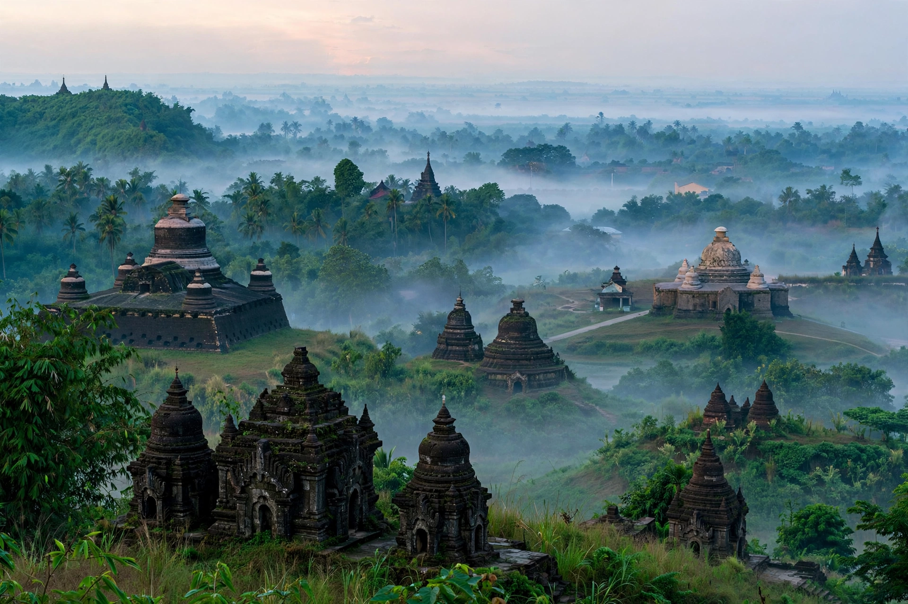

Mrauk U
| Mrauk U | |
|---|---|
| Location | Rakhine State, Myanmar |
| Founded | 1430 AD by King Min Saw Mon |
| Historical role | Capital of the Kingdom of Mrauk U (Arakan), 1430–1785 |
| Notable sites | Shite-thaung Temple, Htukkanthein Temple, Koe-thaung Temple |

Mrauk U (Burmese: မြောက်ဦးမြို့) is a town in northern Rakhine State, Myanmar, and an archaeologically important site: from 1430 to 1785 it was the capital of the Kingdom of Mrauk U, the last independent kingdom of Arakan, a maritime power that at its height in the 16th and 17th centuries controlled the coast from the Sundarbans of Bengal to the western Ayeyarwady delta and traded with the Dutch, Portuguese and Mughal worlds.
History
King Min Saw Mon, restored to the Arakanese throne with Bengali help after exile at the court of the Bengal Sultanate, founded Mrauk U in 1430. The city was protected by hills, lakes and tidal channels and could be flooded against invaders. Under kings such as Min Bin (r. 1531–1554) the kingdom built a powerful navy, resisted Portuguese freebooters and Burmese invasions, and raised the fortress-like temples for which the site is famous. At its peak Mrauk U's embassies reached the Mughal court and its merchants and the Dutch East India Company traded in rice, elephants and slaves. The kingdom declined in the 18th century and was annexed by King Bodawpaya of Burma in 1785, ending 355 years of Arakanese independence; the revered Mahamuni Buddha image was carried off to Mandalay.
Archaeology
Unlike the brick temples of Bagan, Mrauk U's temples are built largely of stone and designed as fortresses, with thick walls and labyrinthine interiors. The Shite-thaung Temple (1580), "Shrine of 80,000 Images", contains relief-lined corridors of sculpture; the Htukkanthein has a spiral corridor of niches; the Koe-thaung, "Shrine of 90,000 Images", is the largest temple on the site. Hundreds of monuments survive around the modern town, though the region's recurring conflict has restricted access and conservation in recent years.
See also
Kingdom of Mrauk U · Rakhine State · Bagan · Mahamuni Buddha Temple